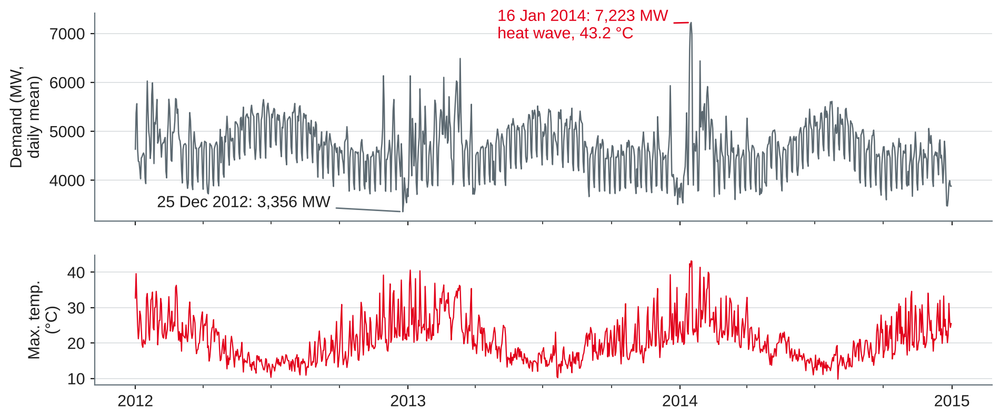
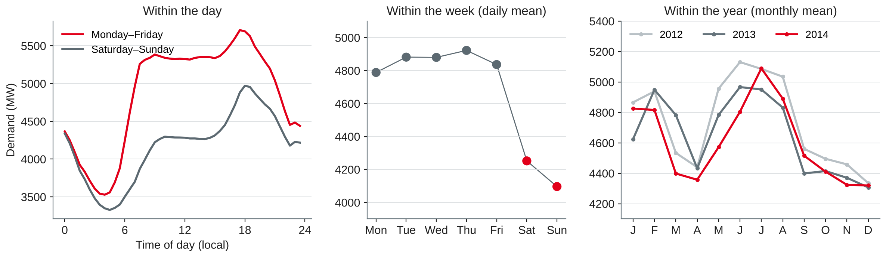
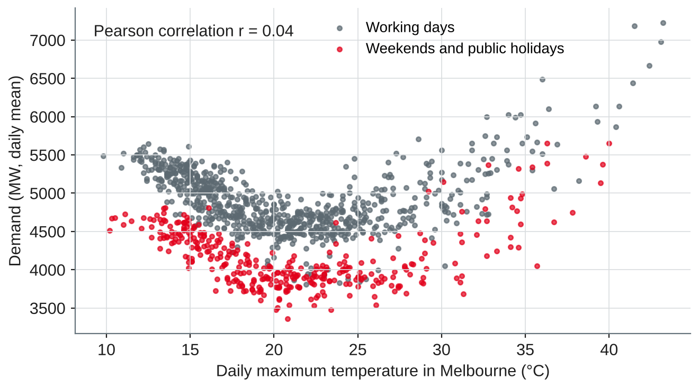
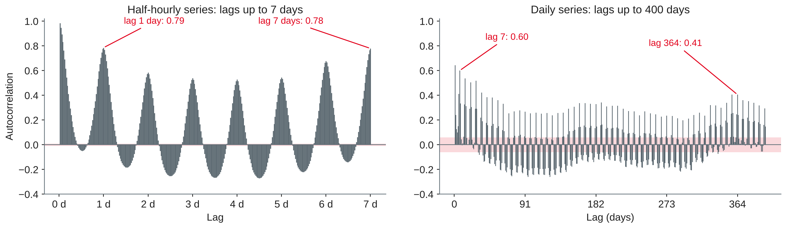
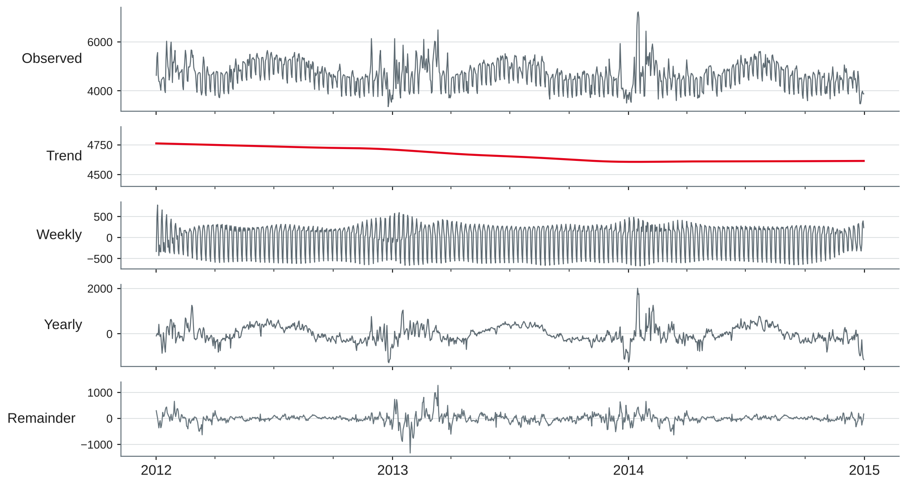

Data Analytics
Characteristics of temporal data · time in the warehouse · trend, seasonality, autocorrelation, stationarity · resampling and decomposition
DHBW Mannheim · Data Science and Artificial Intelligence · Semester 5
Your preparation: one time series from your company. What is measured, how often, since when — and who uses it for which decision?
Why time is more than another column
Own compilation based on Hyndman and Athanasopoulos (2021, Chapters 1–2) and Snodgrass (1999).
| Kind | Example | Aggregate with | Typical question |
|---|---|---|---|
| Events (irregular timestamps) | Orders, clicks, machine alarms | Count, sum | How many per hour? |
| Regular series, flow | Energy in kWh per half hour, sales per day | Sum | Total per day or month? |
| Regular series, rate or level | Load in MW, temperature, stock level | Mean, max, last value | Average or peak per day? |
| States with validity | Customer address, price, contract | Value as of a date | What was true on 1 March? |
Own compilation based on Hyndman and Athanasopoulos (2021, Chapter 2) and Kimball and Ross (2013).
| Local day | Half-hours | Sum of demand | Mean demand (MW) |
|---|---|---|---|
| 7 April 2013 (clocks back) | 50 | 195,253 | 3,905 |
| 6 October 2013 (clocks forward) | 46 | 171,519 | 3,729 |
| 8 April 2013 (normal Monday) | 48 | 220,856 | 4,601 |
Own analysis with data from O'Hara-Wild et al. (2022).
What goes wrong — and how would you fix it?
Date dimension, validity periods and bitemporal data
CREATE TABLE dim_date AS
SELECT d::DATE AS date_key, dayofweek(d) AS weekday, month(d) AS month,
year(d) AS year, dayofweek(d) IN (0, 6) AS weekend
FROM range(DATE '2012-01-01', DATE '2015-01-01', INTERVAL 1 DAY) t(d);Based on Kimball and Ross (2013); own example in DuckDB.
Recap of session 3: a type 2 slowly changing dimension keeps history with validity dates.
| customer_id | city | valid_from | valid_to |
|---|---|---|---|
| C-102 | Mannheim | 2021-03-01 | 2025-07-01 |
| C-102 | Hamburg | 2025-07-01 | 9999-12-31 |
[valid_from, valid_to): no gaps, no overlaps, no "23:59:59"WHERE d >= valid_from AND d < valid_to
Own example based on Kimball and Ross (2013, Chapter 5) and Snodgrass (1999).
Valid time
When a fact is true in the real world: the new price applies from 1 March.
Transaction time
When the fact was recorded in the database: the price change was entered on 15 March.
Based on Snodgrass (1999) and Kulkarni and Michels (2012).
A price is changed from 1 April (recorded 15 March); on 10 April it is corrected to apply from 1 March.
SELECT price FROM price_history -- 5 rows, see notes WHERE tariff = 'Green' AND DATE '2025-03-20' >= valid_from AND DATE '2025-03-20' < valid_to AND DATE '2025-04-05' >= recorded_from AND DATE '2025-04-05' < recorded_to;
| Known as of | Price valid on 20 March |
|---|---|
| 1 March 2025 | 0.30 |
| 5 April 2025 | 0.30 |
| 20 April 2025 | 0.32 (after the correction) |
Own example in DuckDB, based on Snodgrass (1999).
For each question: valid time, transaction time, or both? Which columns would you need?
What a time series is made of

Own illustration with data from O'Hara-Wild et al. (2022), source: Australian Energy Market Operator.
Trend
A long-term increase or decrease — not necessarily linear.
Seasonality
A pattern of fixed, known period tied to the calendar: time of day, day of week, month.
Cycle
Rises and falls without a fixed period, e.g. business cycles.
Remainder
What is left: noise, outliers, effects not modelled (holidays, weather).
Based on Hyndman and Athanasopoulos (2021, Sections 2.3 and 3.2).

Own illustration with data from O'Hara-Wild et al. (2022), based on Hyndman and Athanasopoulos (2021, Section 2.4).

Own illustration with data from O'Hara-Wild et al. (2022).

Own illustration with data from O'Hara-Wild et al. (2022), based on Hyndman and Athanasopoulos (2021, Section 2.8).
| Daily demand | ADF p-value (H₀: unit root) | KPSS p-value (H₀: stationary) |
|---|---|---|
| Original series | 0.010 | 0.015 |
| After seasonal difference (lag 7) | < 0.001 | > 0.10 |
Based on Hyndman and Athanasopoulos (2021, Section 9.1); own analysis with statsmodels (Seabold & Perktold, 2010).
Changing the granularity and taking a series apart
daily = df.resample("D").agg({"Demand": "mean", # rate (MW): mean
"Temperature": "max", # level: max (or mean)
"Holiday": "max"}) # flag: any
weekly = daily["Demand"].resample("W-SUN").agg(["mean", "count"])Own example with pandas (The pandas development team, n.d.), based on Hyndman and Athanasopoulos (2021, Chapter 2).
| Method | Idea | Strengths | Limits |
|---|---|---|---|
| Classical | Moving average for the trend, average per season | Simple, explainable | No trend at the ends, fixed seasonality, not robust |
| STL | Loess smoothing, iterated | Any period, seasonality may change, robust option | Additive only (log for multiplicative), one period |
| MSTL | STL repeated for several periods | Daily + weekly + yearly patterns | Needs several cycles of the longest period |
from statsmodels.tsa.seasonal import STL, MSTL res = MSTL(y, periods=(7, 365)).fit() # y: daily demand, 1,096 days res.trend, res.seasonal, res.resid
Based on Hyndman and Athanasopoulos (2021, Sections 3.4 and 3.6), Cleveland et al. (1990) and Bandara et al. (2025).

Own analysis with statsmodels (Seabold & Perktold, 2010) and data from O'Hara-Wild et al. (2022), based on Bandara et al. (2025).
A decomposition describes; it does not explain. What is left in the remainder points to the external regressors of session 13: temperature and holidays.
Based on Hyndman and Athanasopoulos (2021, Section 4.3); own analysis with data from O'Hara-Wild et al. (2022).
import pandas as pd
URL = ("https://raw.githubusercontent.com/vincentarelbundock/Rdatasets/"
"1dcc2bf5f955cc1224a3e1307256e1fe86b68dae/csv/tsibbledata/vic_elec.csv")
df = pd.read_csv(URL).drop(columns="rownames") # 52,608 half-hours
df["Time"] = (pd.to_datetime(df["Time"], utc=True) # stored in UTC
.dt.tz_convert("Australia/Melbourne"))
df = df.set_index("Time")
n = df.groupby(df.index.date).size()
print(n[n != 48]) # daylight saving days
daily = df.resample("D").agg({"Demand": "mean", # MW: mean, not sum
"Temperature": "max", "Holiday": "max"})
daily.index = daily.index.tz_localize(None)
y = daily["Demand"].asfreq("D") # 1,096 daysOwn example with data from O'Hara-Wild et al. (2022), loaded from Arel-Bundock (n.d.).
from statsmodels.tsa.stattools import acf, adfuller, kpss
from statsmodels.tsa.seasonal import MSTL
print(acf(y, nlags=14).round(2)) # peaks at lags 7 and 14
print(adfuller(y)[1], kpss(y, nlags="auto")[1]) # p-values
res = MSTL(y, periods=(7, 365)).fit()
res.plot()
R = res.resid
for c in res.seasonal.columns: # strength of seasonality
S = res.seasonal[c]
print(c, round(max(0, 1 - R.var() / (S + R).var()), 2))Own example with statsmodels (Seabold & Perktold, 2010), based on Hyndman and Athanasopoulos (2021, Sections 2.8, 4.3 and 9.1).
Work in pairs on the electricity demand data (O'Hara-Wild et al., 2022).
Preparation: finish the lab notebook from today and keep it — sessions 12–14 build on it. Try worksheet 11.